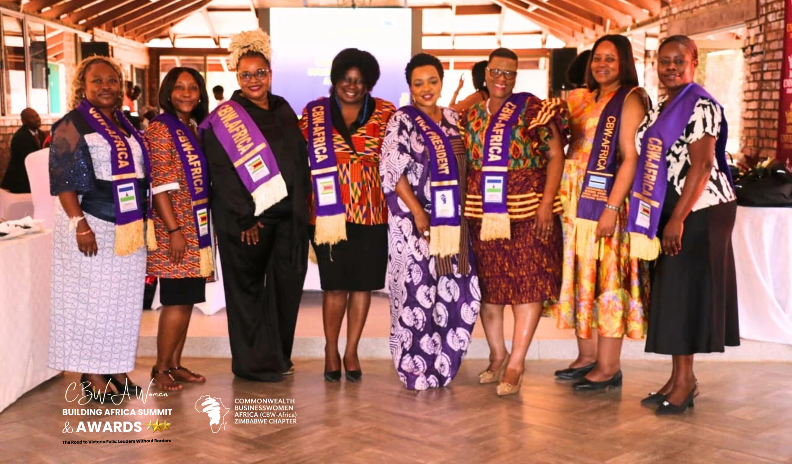
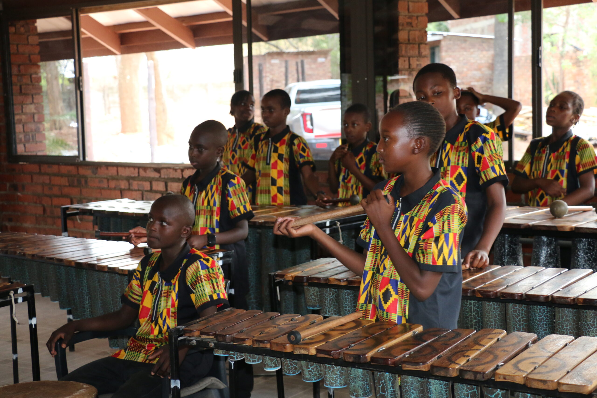
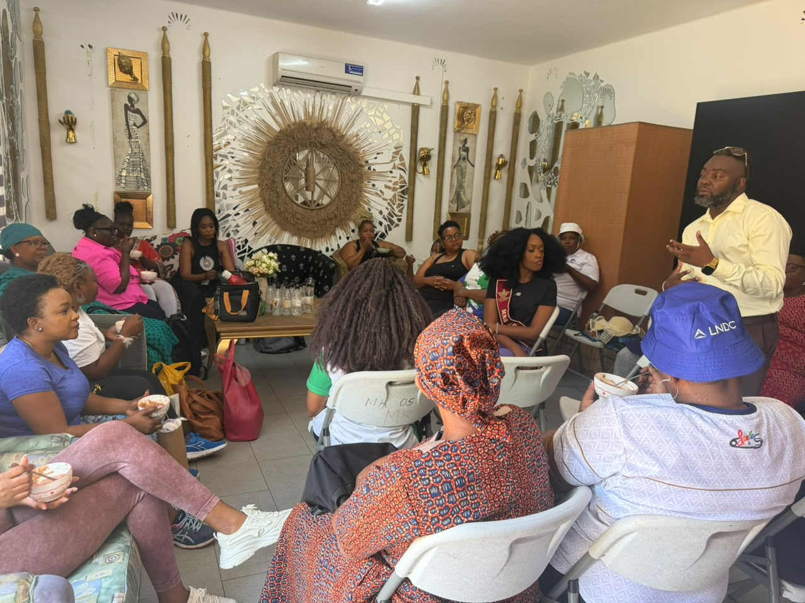

When you are part of the team organizing a summit, you experience it differently from everyone else. While guests are taking in the speeches and exchanging contacts, you are watching the clock, checking the music, and noticing the details most people only feel subconsciously, whether arrivals went smoothly, whether the sound is crisp, whether the pictures are going out on social media, if the more designs and slides are needed and whether the team behind the scenes is actually moving in sync.
That is why the Women Building Africa Summit & Awards, held on November 6 and 7, 2026, at The Mustard Seed Restaurant (27 Ridgeway South, Highlands, Harare), stayed with me. Convened by the Commonwealth Businesswomen Africa (CBW-Africa) Zimbabwe Chapter under the leadership of Country Head Angeline Mhlanga and the theme “The Road to Victoria Falls: Leaders Without Borders,” it proved what happens when vision is backed by genuine orderliness.
The Recap: Cultural Celebration in Harare
Arrivals & Setting the Tone
A great summit starts long before anyone steps up to a microphone. Even before delegates landed in Zimbabwe, we kept active communication groups running for speakers and attendees so everyone knew where they needed to be and arrived already excited. From the moment guests touched down, airport welcomes and transfers ran smoothly. Setting that tone early meant delegates walked into The Mustard Seed Restaurant relaxed, welcomed, and ready to engage.
Day 1: The Summit, Panels & The Marimba Kids

Hosted by our Master of Ceremonies, Rumbie Moyo, Day 1 moved with real purpose and structure, backed by clear AV and sound, dedicated photography, and strong media coverage that ensured the substance in the room was properly documented.
In her opening remarks, CBW-Africa Vice President Ms. Lightness Salema framed the entire gathering with a line that cut straight to the point: “There will be no economic empowerment without fixing each other’s crown.” As reflections on the summit rightly noted, the true measure of putting African women leaders in one room is not the size of the crowd or the titles on the program, it is whether we shift from competition to complementarity, turning different strengths into shared economic value chains.
That practical spirit carried straight into the panel discussions. A standout session was Panel 1: “Otshwereng – Uphatheni? Wakabatei? The Power of Starting Where You Are With What You Have.” Regional leaders and founders, including Gorapetswe Nonofo Lebang, Nomaphuthi Hoohlo (Toca Organics / CBW Lesotho), Nanzy Chaitezvi (Mosadi Letlotlo), Nancy Mutungwazi (Victoria Falls Wildlife Trust), and Sharon Chingwaro (Mambokadzi)—spoke candidly about leveraging existing resources to build cross-border impact without waiting for perfect conditions.
And right in the middle of the high-level business and leadership conversations came one of the most unforgettable moments of the gathering: a live performance by the marimba kids. Their energy, precision, and joy lit up the entire venue. It was a powerful reminder of why we do this work, the next generation we are building for, and the rich cultural pride that anchors everything we create across Africa.
Day 2: Aligned B2B, Food & Cultural Exchange

If Day 1 built the vision, Day 2 turned it into tangible connections and genuine sisterhood. The B2B Market Linkage & Local Showcase, highlighted by the Regional Sisters x Mambokadzi initiative and the House of Wellness featuring over 60 locally sourced botanical products, created purposeful, aligned business-to-business matchmaking connecting entrepreneurs from Zimbabwe, Lesotho, Botswana, Tanzania, Kenya, Malawi, and beyond.
From there, the summit flowed into Cultural Day and a traditional Zimbabwean African lunch (Ngatidyei!). Delegates showed up in full cultural attire, sharing great food, laughter, and stories across our African family. Anyone who has done real business on this continent knows that the strongest partnerships are rarely closed over cold formal emails, they are forged around a shared table, appreciating each other’s food, music, and heritage. In true CBW-Africa Zimbabwe fashion, “Our Skill is Our Strength, Our Heritage is Our Bond.”
The Road to Victoria Falls Summit 2027 (July 29–31, 2027)
Harare was the proving ground. Victoria Falls is where we scale.
From July 29 to 31, 2027, CBW-Africa Zimbabwe Chapter will host the annual CBW Africa Regional Conference in Victoria Falls under the banner Connect • Trade • Build • Impact.
What gives me the most confidence about Victoria Falls is not just what we got right in Harare, it is how honestly the organizing team reviewed the summit afterward. We did not just celebrate and pack up. We documented our lessons and are already strengthening the machinery for 2027: setting up streamlined online pre-arrival ticketing and payment systems, coordinating group registrations through Country Directors, enforcing clear exhibition standards, and onboarding venue and media partners early. That level of accountability is what separates a one-off event from a world-class regional institution.
For Prospective Attendees
This is not a room for passive listening. By taking your seat in Victoria Falls next July, you are stepping into a well-coordinated, high-trust network of founders, executives, and changemakers from across the continent who are actively looking to collaborate, trade, and build. Between now and July 2027, the goal is simple: keep the momentum alive so when we arrive in Victoria Falls, we are scaling partnerships that are already in motion.
For Brands & Sponsors
Putting your name and budget behind an event always comes with one fair question: Will it actually be well-run? Having worked on the inside of this team, I can tell you firsthand that CBW-Africa Zimbabwe respects structure, delivers on its promises, and creates an environment where delegates are genuinely engaged. As a non-profit organization driven by resource mobilization and purposeful partnerships, every sponsor, whether contributing in cash, in kind, or in service, directly fuels a movement that is organized, visible, and built to last. Putting your brand in Victoria Falls places you in front of serious decision-makers across Africa.
Ready to attend, partner, or sponsor the Road to Victoria Falls Summit 2027?
Reach out to the CBW-Africa Zimbabwe Chapter team at cbwafricazimbabwe@gmail.com or (+27) 81 353 1051.
Working alongside the CBW-Africa Zimbabwe Chapter, both as a board member and through NJC Global handling the event marketing, graphic design, promotional videos, and consistent social media communications, has given me a front-row seat to how much care, discipline, and heart goes into building this platform. We are already laying the groundwork for July 2027, and whether you are coming to claim your seat in the room or stepping in as a sponsor, now is the time to join us on the Road to Victoria Falls.